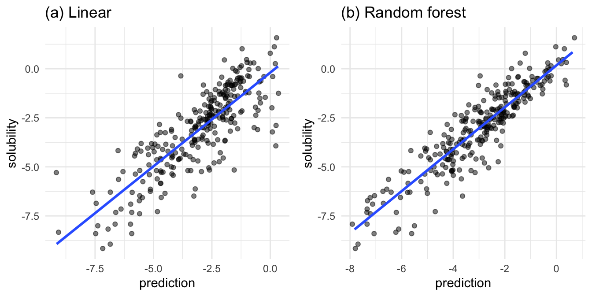

df <- as_tibble(read.csv("data/delaney-processed.csv")) %>%
select(
compound = Compound.ID,
mw = Molecular.Weight,
h_bond_donors = Number.of.H.Bond.Donors,
rings = Number.of.Rings,
rotatable_bonds = Number.of.Rotatable.Bonds,
psa = Polar.Surface.Area,
solubility = measured.log.solubility.in.mols.per.litre
)Aqueous solubility (ability to dissolve in water) is an essential property of a chemical compound important in the laboratory. Can the solubility of a compound be predicted based on a chemical structure alone? John Delaney posed this predictions question in 2004 (Delaney 2004) and wrote a paper with numerous citations in the chemistry literature. This study will take a dataset similar to that study and use linear and random forest regression to predict the compounds’ solubilities.
The random forest model is a much better predictor of solubilities.
This code for this study is implemented in R and is available in its entirety on GitHub.
A number of compounds in this dataset are well-known, even outside the chemistry community. Here is a sample of what lies inside the dataset:
Table 1: Well-known compounds in the dataset
| Compound name | Description |
|---|---|
| Sucrose | Sugar |
| Erythritol | Sugar substitute |
| Caffiene | Coffee time! |
| Fructose | Component of high fructose corn syrup |
Dataset Description
The original report published a dataset of compounds represented as SMILES strings. SMILES strings are a compact and text-based method of specifying chemical structures. This study will use a preprocessed dataset mentioned on moleculenet.ai and distributed by deepchem.io, which contains features parsed from these SMILES strings. You can browse the file on GitHub.This study uses a subset of these preprocessed features, which are listed in Table 2.
Table 2: Features of each compound used in the regression
| Feature name | Units | Description |
|---|---|---|
mw |
g/mol | The molecular weight of the compound. |
solubility |
log(mol/L) | The log solubility, in mol/L. Solubility is the response variable of this study. |
psa |
Å2 | The polar surface area of a molecule. |
h_bond_donors |
unitless | The number of hydrogen bond donors on a molecule.1 |
rotatable_bonds |
unitless | The number of rotatable bonds within a molecule.2 |
Exploratory visualization
Before I dive into the machine learning model, let’s examine exploratory plots to get a feel for the data distribution. Figure 1 has histograms (for continuous variables) and bar plots (for discrete variables) to demonstrate the dataset’s values’ distributions. Figure 1a, 1b, 1d, 1e, and 1f show distributions of values favoring their respective range’s low ends. Solubility, our response variable, has a broader spread above and below its mean of -3.05.
p1 <- ggplot(df, aes(x = mw)) +
geom_histogram(bins = 10) +
labs(title = "(a)") +
theme_minimal()
p2 <- ggplot(df, aes(x = psa)) +
geom_histogram(bins = 10) +
labs(title = "(b)") +
theme_minimal()
p3 <- ggplot(df, aes(x = solubility)) +
geom_histogram(bins = 10) +
labs(title = "(c)") +
theme_minimal()
p4 <- ggplot(df, aes(x = h_bond_donors)) +
geom_bar() +
labs(title = "(d)") +
theme_minimal()
p5 <- ggplot(df, aes(x = rings)) +
geom_bar() +
labs(title = "(e)") +
theme_minimal()
p6 <- ggplot(df, aes(x = rotatable_bonds)) +
geom_bar() +
labs(title = "(f)") +
theme_minimal()
grid.arrange(p1, p2, p3, p4, p5, p6, nrow = 3)Figure 1a, 1b, 1d, 1e, and 1f show distributions of values favoring their respective range’s low ends. Solubility, in Figure 1c, has a broader spread above and below its mean of -3.05.
A number of the features of the molecules require lots of atoms. For example, a five-ring molecule will likely have a higher molecular weight than a three-ring molecule. Molecular weight has a special relationship with all other variables that denote each molecule’s increasing structural complexity. Figure 2 plots molecular weight against all other variables, with a trend line for each relationship, as shown in the jittered scatter plots below.
alpha = 0.1
p1 <- ggplot(df, aes(x = psa, y = mw)) +
geom_jitter(alpha = alpha) +
geom_smooth(method = "lm", se = FALSE) +
labs(title = "(a)") +
theme_minimal()
p2 <- ggplot(df, aes(x = solubility, y = mw)) +
geom_jitter(alpha = alpha) +
geom_smooth(method = "lm", se = FALSE) +
labs(title = "(b)") +
theme_minimal()
p3 <- ggplot(df, aes(x = h_bond_donors, y = mw)) +
geom_jitter(alpha = alpha, width = 0.1) +
geom_smooth(method = "lm", se = FALSE) +
labs(title = "(c)") +
theme_minimal()
p4 <- ggplot(df, aes(x = rings, y = mw)) +
geom_jitter(alpha = alpha, width = 0.1) +
geom_smooth(method = "lm", se = FALSE) +
labs(title = "(d)") +
theme_minimal()
p5 <- ggplot(df, aes(x = rotatable_bonds, y = mw)) +
geom_jitter(alpha = alpha, width = 0.1) +
geom_smooth(method = "lm", se = FALSE) +
labs(title = "(e)") +
theme_minimal()
grid.arrange(p1, p2, p3, p4, p5, nrow = 3)Figures 2a, 2c, 2d, 2e all exhibit increasing molecular weight with increased structural complexity. Figure 2b stands out: in general, as molecular weight increases, solubility decreases.
Train/test split
All models use the same randomized train/test split. First, I shuffled the rows of the original dataset. Then, I selected the first 846 rows for the training set and the last 282 rows for the test dataset. I seeded the random number generator with a constant to ensure the same shuffles between model runs.
solubilityTrainTestSplit <- function(all_data, split_fraction = 0.75, random_seed = 13) {
# Shuffle based on random seed
set.seed(random_seed)
sample_indecies <- sample(nrow(all_data), nrow(all_data))
shuffled <- all_data[sample_indecies, ]
# Train test split
train_row <- round(nrow(shuffled) * split_fraction)
test_row <- train_row + 1
train <- shuffled[1:train_row, ]
test <- shuffled[test_row:nrow(shuffled), ]
# Now create the final list that is returned
list(
train = train,
test = test
)
}
split <- solubilityTrainTestSplit(df)
test <- split$test
train <- split$trainTable 3 is the first few rows of the train dataset:
Table 3
| compound | mw | h_bond_donors | rings | rotatable_bonds | psa | solubility |
|---|---|---|---|---|---|---|
| 2-Ethyl-2-hexanal | 126.199 | 0 | 0 | 4 | 17.07 | -2.460 |
| 3-Butanoyloxymethylphenytoin | 352.390 | 1 | 3 | 6 | 75.71 | -5.071 |
| Trichloromethane | 119.378 | 0 | 0 | 0 | 0.00 | -1.170 |
| Indole | 117.151 | 1 | 2 | 0 | 15.79 | -1.520 |
| 1,2,3,4-Tetrahydronapthalene | 132.206 | 0 | 2 | 0 | 0.00 | -4.370 |
| 2,2’,3,4,5-PCB | 326.437 | 0 | 2 | 1 | 0.00 | -7.210 |
Table 4 is the first few rows of the test dataset:
Table 4
| compound | mw | h_bond_donors | rings | rotatable_bonds | psa | solubility |
|---|---|---|---|---|---|---|
| Xipamide | 354.815 | 3 | 2 | 3 | 109.49 | -3.790 |
| Diallate | 270.225 | 0 | 0 | 4 | 20.31 | -4.286 |
| m-Fluorobromobenzene | 175.000 | 0 | 1 | 0 | 0.00 | -2.670 |
| 3,5-Dimethylphenol | 122.167 | 1 | 1 | 0 | 20.23 | -1.400 |
| parabanic acid | 114.060 | 2 | 1 | 0 | 75.27 | -0.400 |
| p-Nitroaniline | 138.126 | 1 | 1 | 1 | 69.16 | -2.370 |
Formula
All models use the same formula based on all the predictors.
formula <- solubility ~ mw + h_bond_donors + rings + rotatable_bonds + psaLinear Model
Our first stop is the linear model. Table 3 shows the performance of the linear model after training when I use it to predict the solubilties in the test dataset.
Table 3: linear model performance on test data
analyzeSolubilityLinearModel <- function(model, test_data) {
# Run the prediction
predicted_solbilities <- predict(model, test_data)
# Assemble the compounds and predictions back onto the
# train features
test_results <- test_data %>%
mutate(prediction = predicted_solbilities) %>%
mutate(residual = solubility - prediction)
# Calculate the standard deviation and RMSE
sd_solubilities <- sd(test_results$solubility)
rmse <- sqrt(mean(test_results$residual ^ 2))
# calculate r_squared
rss <- sum(test_results$residual ^ 2)
total_error <- test_results$solubility - mean(test_results$solubility)
tss <- sum(total_error ^ 2)
r_squared <- 1 - (rss / tss)
# Create a list to return to the caller
list(
sd_solubilities = sd_solubilities,
rmse = rmse,
test_results = test_results,
r_squared = r_squared
)
}
lm_model <- lm(solubility ~ mw + h_bond_donors + rings + rotatable_bonds + psa, train)
lm_result <- analyzeSolubilityLinearModel(lm_model, test)
lm_result_df <- tibble(
metric = c("RMSE", "R^2"),
value = c(lm_result$rmse, lm_result$r_squared)
)
knitr::kable(lm_result_df)| metric | value |
|---|---|
| RMSE | 1.1955559 |
| R^2 | 0.6721196 |
The RMSE of 1.196 is less than the test solubility’s standard deviation of 2.092, but the R^2 of 0.672 shows the linear model does not explain much of the variance of underlying solubility.
Random Forest Regression
The second model is the random forest model. For the random forest, I use the ranger package. The model uses 500 trees and is trained and tested with the same train and test data as the original linear model. Table 4 shows the random forest’s prediction performance on the test data after training.
Table 4: Random forest test data performance
analyzeSolubilityRandomForestModel <- function(model, test_data) {
# Run the prediction
predicted_solbilities <- predict(model, test_data)$predictions
# Assemble the compounds and predictions back onto the
# train features
test_results <- test_data %>%
mutate(prediction = predicted_solbilities) %>%
mutate(residual = solubility - prediction)
# Calculate the standard deviation and RMSE
sd_solubilities <- sd(test_results$solubility)
rmse <- sqrt(mean(test_results$residual ^ 2))
# calculate r_squared
rss <- sum(test_results$residual ^ 2)
total_error <- test_results$solubility - mean(test_results$solubility)
tss <- sum(total_error ^ 2)
r_squared <- 1 - (rss / tss)
# Create a list to return to the caller
list(
sd_solubilities = sd_solubilities,
rmse = rmse,
test_results = test_results,
r_squared = r_squared
)
}
rf_model <- ranger(
formula,
train,
num.trees = 500,
respect.unordered.factors = "order"
)
rf_result <- analyzeSolubilityRandomForestModel(rf_model, test)
rf_result_df = tibble(
metric = c("RMSE", "R^2"),
value = c(rf_result$rmse, rf_result$r_squared)
)
knitr::kable(rf_result_df)| metric | value |
|---|---|
| RMSE | 0.8665462 |
| R^2 | 0.8277501 |
Comparing linear and random forest models
Table 5 shows the performance metrics of the linear and random forest models.
Table 5
model_comparison_df <- tibble(
model = c("Linear", "Random forest"),
rmse = c(lm_result$rmse, rf_result$rmse),
r_squared = c(lm_result$r_squared, rf_result$r_squared)
)
knitr::kable(model_comparison_df)| model | rmse | r_squared |
|---|---|---|
| Linear | 1.1955559 | 0.6721196 |
| Random forest | 0.8665462 | 0.8277501 |
Examining Table 5 shows reveals two comparisons between the models that are immediately apparent. The first comparison is their respective RMSE values when evaluated on the training dataset. Lower RMSE values are better. The standard deviation of log solubility in the test dataset is 2.092. This value compares nicely with the random forest’s RMSE of 0.867, but it does not compare well with the linear model’s RMSE of 1.196. The clear winner here, unsurprisingly, the random forest. The second comparison is their respective R^2 values. R^2 values closer to 1.0 are better. The R^2 value of the linear model is a lowly 0.672, while the R^2 value for the random forest is much better at 0.828.
Figure 3, which plots actual versus predicted solubilities, is my favorite comparison between the linear and random forest models. Recall that all solubilities are log solubilities, hence the negative values on the axes.
alpha <- 0.5
linear_result_plot <- ggplot(lm_result$test_results, aes(x = prediction, y = solubility)) +
geom_jitter(alpha = alpha, width = 0.1) +
stat_smooth(method = "lm", se = FALSE) +
labs(title = "(a) Linear") +
theme_minimal()
rf_result_plot <- ggplot(rf_result$test_results, aes(x = prediction, y = solubility)) +
geom_jitter(alpha = alpha, width = 0.1) +
stat_smooth(method = "lm", se = FALSE) +
labs(title = "(b) Random forest") +
theme_minimal()
grid.arrange(linear_result_plot, rf_result_plot, nrow = 1)
In Figure 3a, the linear model fit is lacking in the area of high predicted solubility. In this area, the actual solubilities take a wide range, from relatively insoluble to very soluble. At the edge of low predicted solubility, we find a range of actual solubilities.
In Figure 3b, the random forest model trends slightly more reliable. The random forest predicts high solubilities where there are actual high solubilities. Near the low end of the actual solubilities, there are numerous under and over predictions from the random forest.
Conclusion
The random forest performs better than the linear model but still has deficiencies around molecular features causing over or under predicted solubilities.